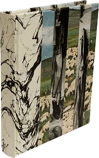

Greener Pastures
Attention: Soon I am leaving the country and will be temporarily or semi-permanently suspending my bookbinding to focus, unwaveringly, on my writing.
Pages: 160
Length: 6 inches
Width: 4.8 inches
Depth: 0.63 inches
Cover: 1976 rural American coats and sheep collage with black and white marbleized paper on spine
Endpapers: Bilateral (green/speckled white) Japanese paper
Signatures: Slightly off white
Walking through open fields, spaces which stretch far beyond the self, extending the self until all vitals burst. But when that moment passes? Would it be forgotten? Those vibrations, which contain the boundlessness to shake your crucial entity. Creation is a natural bi-product of friction and of repose. No matter what you reap, may it be in abundance to what is sown. The relevence? Greener pastures, as an idea, seems to scream for an excuse to be shaken. And this book. . . well. . . it appears as if it already has.
$40, sold.
{kind=link}
{kind=link}
{kind=link}
· · · · · · · · · · · · · · · · · · · · · · · · · · · · · ·